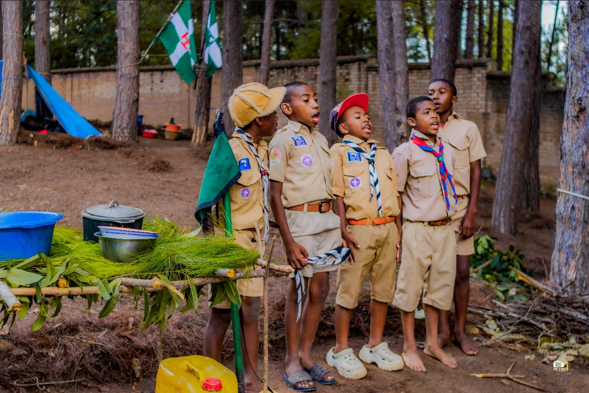
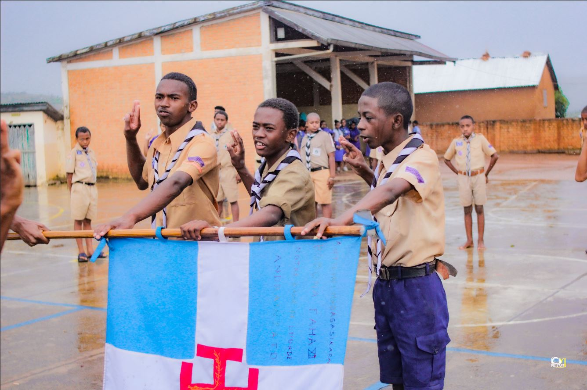
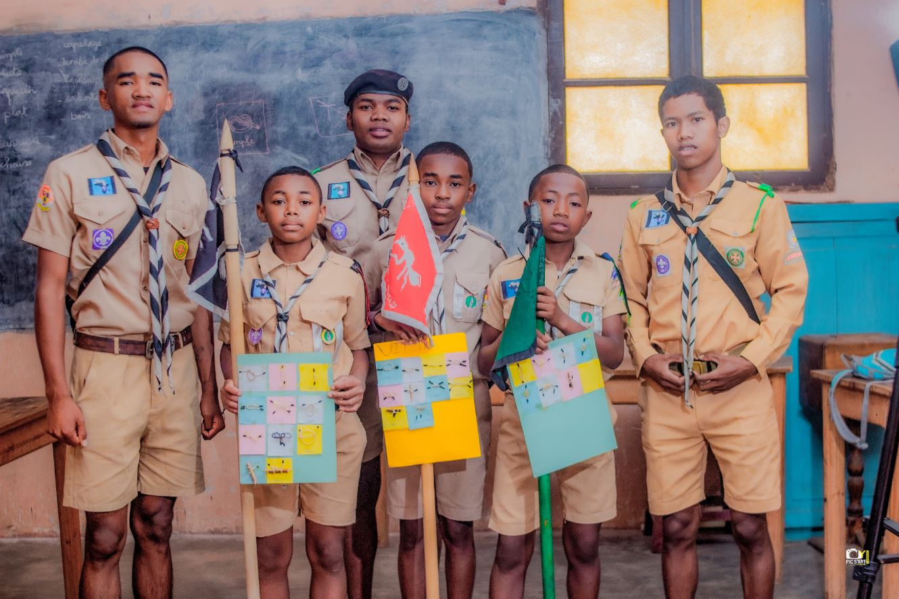
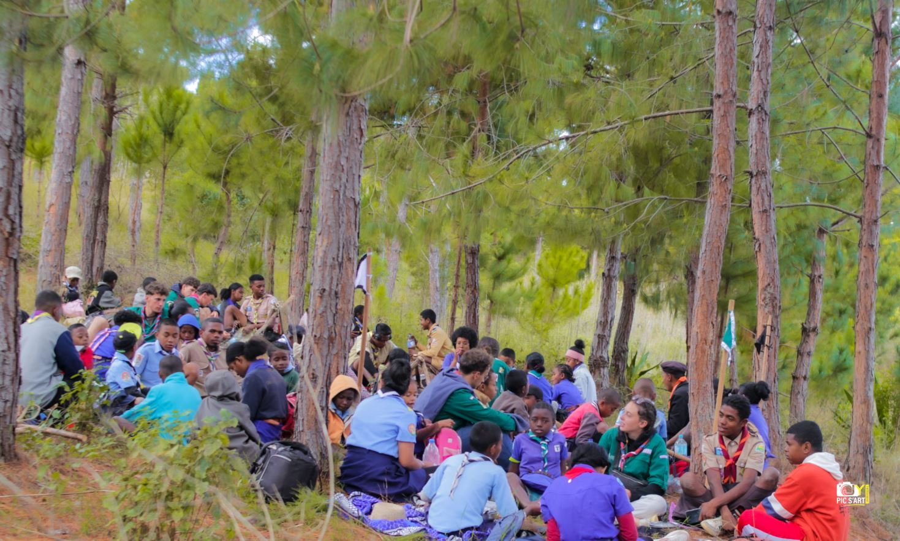

LASY FAGNOMBA
Maharomby, Fianarantsoa
Notre dernier grand camp, vécu en pleine nature à Maharomby. Aventure, fraternité et progression spirituelle pour toutes les branches.

LA VIE DU GROUPE
Du dimanche matin aux grands camps en pleine nature, voici comment nous vivons le scoutisme à Andrainjato.
AU QUOTIDIEN
Ce que nous vivons chaque semaine ensemble.
Chaque dimanche matin à l'ECAR Notre Dame de Lourdes Andrainjato — temps fort de la semaine.
Maîtrise des nœuds scouts, signalisation, codes secrets et techniques de plein air.
Engagement écologique : transformation des déchets en objets utiles pour la communauté.
Esprit d'équipe, fair-play et dépassement de soi à travers le sport collectif.
Apprentissage des chants scouts, animations de feux de camp et célébrations liturgiques.
Grands jeux par patrouille, jeux de pistes et défis qui renforcent l'esprit de groupe.
Grands camps
Nos deux grands camps de l'année — temps forts d'aventure et de fraternité.

Maharomby, Fianarantsoa
Notre dernier grand camp, vécu en pleine nature à Maharomby. Aventure, fraternité et progression spirituelle pour toutes les branches.

Andranomafana
Camp d'été à Andranomafana — un cadre exceptionnel pour vivre intensément l'expérience scoute, avec veillées, randonnées et visites des lieux.
Cérémonies & rites
Les grands moments qui marquent la progression de chaque scout.

Engagement solennel devant Dieu et le groupe — moment fondateur de la vie scoute.

Rite de passage — chaque jeune reçoit le foulard aux deux couleurs du groupe.

Reconnaissance des jeunes appelés à exercer une responsabilité de leadership.

Rencontre indispensable pour expliquer notre mission et co-éduquer ensemble les jeunes.
En images



